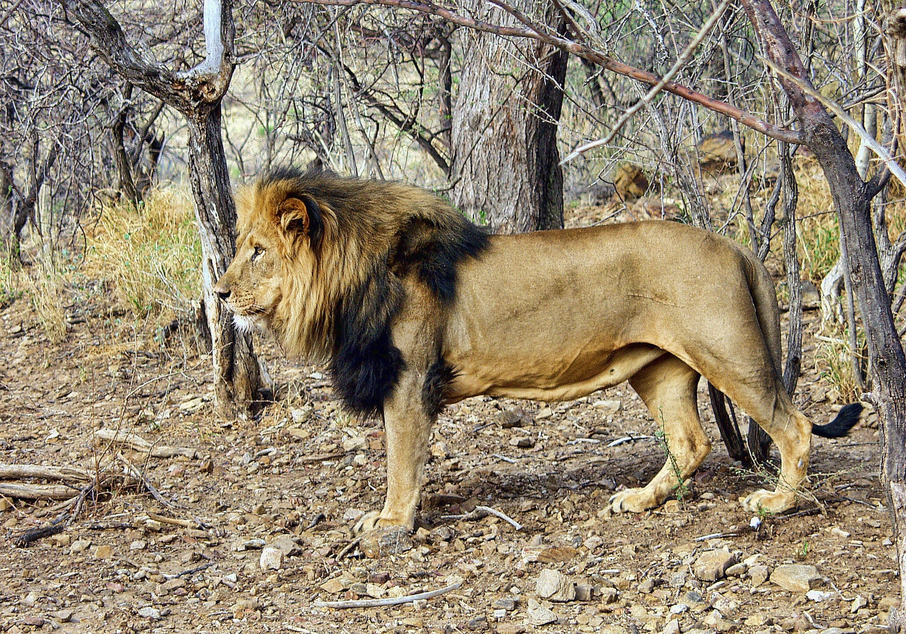

Nuotraukos saltinis
Liūtas
Gyvūnas
Liūtas - katinių šeimos plėšrus žinduolis. Gyvena savanose, miško
savanose, krūmynuose
- Gyvenimo trukmė: 10-14 metų
- Masė: 190 kg patinas, 130 kg patelė.
- Liūtai vaikšto kunais nesiekdami žemės.
- Kuo tamsesnis liūto karčiai, tuo jis vyresnis.
-
Šie gyvūnai yra mėsėdžiai, jų grubiu gali tapti ir kiškis, ir stambus
buivolas
© 2099, Vardas Pavardė